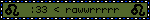

WALCOM TO ASTRO LAZEE LAND :3 :3 :3
Mai about mii page :3
About me:
:3 hai am trans girl and my name is Maya Cirkut (Vriska Serket Homestuck refence!!!!1!1!!11) :3
proun stuffs are here :3
↓↓↓↓↓↓↓↓↓↓↓↓↓↓↓↓
maw abawt me:
I am pretty good with a lot operating systems, and have used these:
arch,
linux mint,
endeavour,
syslinuxos,
windows,
arco,
artix (not for longer than a day),
archcraft,
nobara,
fedora,
blissos,
and archmage!
I have built a computer with my friend before, however it wasnt really that great (he can make better computers now anyways)
I occasionally use my python programming to send messages using webhooks and sometimes bots.
I like to play counter strike, minecraft, ultrakill, roblox and other games too.
if you want to contact me, you can find my socials page on the low quality navbar or here
